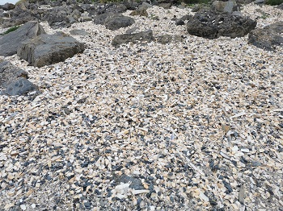

Rosses Point
Is a scenic village 7km away from Sligo Town. Rosses Point is also a name of the surrounding peninsula which
is at the entrance to Slugo Harbour from Sligo Bay. It is on the opposite side from Strandhill, just to the North
and divided by Oyster Island and Coney Island. There are multiple places of interest rich in history like Metal Man
Lighthouse, Oyster Island Lighthouse, Lower Rosses Lighthouse, Waiting on Shore monument, Spanish Shipwrecks or
Elsinore House. You can also find all basic amenities and others like Sligo Yacht Club or County Sligo Golf Club.
There are 3 beaches out of which 2 are sandy and feature some stunning cliffs. There are also multiple events
organised during the year like famous Shanty Festival.
Pirates and Smugglers
Rosses Point, the West’s best kept secret
Situated on the north west tip of Europe, Rosses Point stands on the far reaches of the Wild Atlantic.
A picturesque village, it harks back to a simpler time and its rugged beauty oozes other worldliness and
boasts some of the very best scenery to be found on the Wild Atlantic Way trail.
Over 60 Ships have been lost in Sligo Bay with hardly a trace surviving however look out for the following,
1886 Naryana- Wrecked, Coney Island. Her full nameplate hangs in MJ Wards Bar, Coney Island while a photo of her
captain and her ships lifeboat nameplate can be seen in Austie’s. 1912 SS Sligo- wrecked, Ardbowline.
Being a seafaring place, the village was home to pirates and smugglers. Elsinore House, latterly owned by Henry Middleton,
was originally built by John Black otherwise known as “Black Jack”, who was reputed to be a fine smuggler and pirate.
There was even an enquiry into the operation of an armed gang of smugglers in Rosses Point in the early 1800’s.
For “Black Jack’s” fine efforts his beautiful house Elsinore was eventually seized by the authorities.
Rosses Point has long produced many sailors and Sea Captains who traded across the globe. Our most famous sailor is the
Petty Officer standing on The Perch Rock since 1821, none other than our own Metal Man.

Sailors and Fairies
When ships line up his light with the Oyster Island light behind, they know they have the right course home, and when they reach
him his outstretched arm points to the deep channel. Did you know that his designer Thomas Kirk also designed Nelsons
Statue once on the pillar in Dublin and the three statues atop the GPO. Pilots kept twenty-four-hour lookout for arriving ships.
They did this from the watch houses. The oldest is on the scenic walk. Within these walls WB Yeats listened to seafaring men
tell tales of exotic lands abroad and, closer to home, of ghosts and fairies. This watch house on the scenic walk was replaced
by one beside the 1st Tee on the Golf Course. Today the VHF radio replaces the need for long watches through the night.
WB Yeats maintained that there were more ghosts in Rosses Point than anywhere and certainly there is no shortage of stories
locally. Pirates and smugglers feature prominently so be very watchful as you pass Elsinore House or the pilot watch houses.
As for the ‘Good Folk’ they had many haunts and were greatly respected by the local people. Most notably they appeared on the
far strand and Bomore which inspired Yeats to write the Stolen Child. The old folk maintained that the project, way back, at
Jackson’s Pier (along the scenic walk), was doomed to fail as the ‘Good Folk’ owned that part of the shore.
Rosses Point has, in the past, provided inspiration for artists, poets and musicians which continues to this day.
Our most famous connection is to the Yeats family. The extended family were very involved with Sligo’s shipping trade.